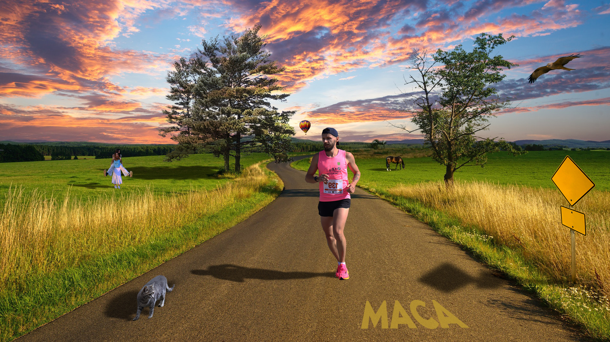

Vježba 1 - Izrada fonta
Izrada vlastitog fonta u Fontforge-u.

Vježba 2 - Bezireove krivulje
Precizno crtanje svojih incijala u Illustratoru.
Izrada vlastitog fonta u Fontforge-u.
Precizno crtanje svojih incijala u Illustratoru.
U Illustratoru koristila sam rotacije, scale, transparenciju, multipliciranje oblika, definiranje uzoraka....
U Illustratoru izradila sam složene oblike spajanjem i oduzimanjem staza, primjenu linearnih, radijalnih i mesh gradijenata, te rad s transparencijom i slojevima u vektorskoj grafici. .
Vektorska grafika.
U Illustratoru kreirala sam vlastiti font, dizajnirala složenu ilustraciju prema predlošku u Illustratoru/Inkscapeu, koristeći Bezierove krivulje,
vlastiti font, gradijente (linearne, radijalne, mesh), maskiranje, blend, transformacije, swatch boje u CMYK-u, transparenciju, i sve ostale zadane elemente.
.
U ovoj vježbi naučila sam koristiti osnovne tehnike digitalnog retuširanja fotografija u Adobe Photoshopu. Radila sam na dvije slike koristeći alate za selekciju,
zamućivanje šuma, kloniranje i zaglađivanje, Healing Brush, Spot Healing te kopiranje selekcija u nove slojeve. Nadalje, primijenila sam lokalne korekcije
svjetline i globalne korekcije boja i kontrasta.
U ovoj vježbi primijenila sam neinvazivne tehnike koloriranja slika pomoću preciznih ručnih selekcija i maski, kako bih obojala ili promijenila nijanse
određenih područja bez izmjene originalne slike. Boja je dodana na posebnom layeru, što omogućuje lakšu kontrolu i naknadne korekcije.
.jpg)
Radila sam fotomontažu kombiniranjem dijelova više fotografija pomoću različitih tehnika selekcije. Koristila sam jednostavne alate za selektiranje
oštrih rubova i složenije metode poput selekcije putem kanala i crtanja maski u quick mask modu. Također sam izrađivala i uklapala sjene te vršila korekciju
boja kako bi finalna slika izgledala realističnije.
.jpg)
Piksel grafika.
Kreirala sam kompoziciju u Photoshopu kombiniranjem više fotografija koristeći retuširanje, selekcije, koloriranje i sjene.
Radila sam kinemagraf, spoj statične i pokretne slike, koristeći video isječak. Video sam obradila u DaVinciu, a završnu obradu i izvoz u GIF formatu napravila u Photoshopu.
.gif)
.gif)